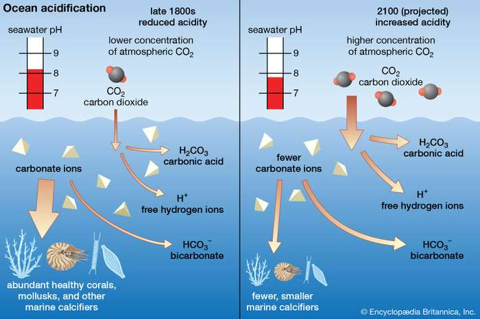

Threats to Coral Reefs
Today, coral reefs face a multitude of stressors and shocks that are leading to the decline of the ecosystems they support, on both a global and local scale.
Locally, the threats include:
Irresponsible fishing practices can also be physically harmful to reefs. Indiscriminate fishing practices such as the use of gill and trawl nets or dynamite (“blast fishing”) can also cause major harm to reefs by removing non-target species along with target species, and physically damaging the reef in the process.
Eutrophication reduces the amount of light reaching corals, which rely on photosynthesis of their algal symbionts for nutrition, and allows macroalgae to smother corals. Other types of chemical pollution can be directly harmful to coral organisms and the organisms in the ecosystem. These harmful chemicals can accumulate in the tissue of plants and animals and get magnified through the food chain as they pass into higher trophic levels, disrupting the balance in the ecosystem.
In the 1970s, white-band disease spread across South Florida and the Caribbean, causing 95% mortality in the once regionally dominant branching Staghorn (Acropora cervicornis) and Elkhorn (A. palmata) coral species, now listed as endangered.
More recently, stony coral tissue loss disease (SCTLD) spread rapidly and caused mortality in more than 20 species of massive, star, and brain coral. First spotted in the waters off South Florida, this disease has now spread across the Florida Reef Tract and in other areas of the Caribbean, contributing to significant declines in coral cover on the affected reefs.
Disease outbreaks may be exacerbated by higher ocean temperatures; outbreaks are frequently seen after major bleaching events presumably due to reduced coral health caused by multiple stressors.
These threats are coupled with broad world-wide changes in the climate that, in turn, are impacting the health of reef ecosystems negatively. The global threats include:
Another source of storm-related damage to corals is “sandblasting” by sediment that is lifted into the water column; this can cause polyp mortality and create small wounds that are then open to bacterial or algal settlement.
As suspended sediment resettles, reefs can also be smothered. Further, changes in water quality from storms can lead to nutrient loading and algal blooms.
These single-celled algae provide a coral more than 90% of the energy it needs to survive through photosynthesis. When the algae are expelled during thermal stress, the coral animal turns white and must subsist on heterotrophic feeding by using its polyp tentacles to catch small plankton from the water column.
Though a coral can recover from bleaching, it can also die if the temperature remains elevated. As climate change continues to raise ocean temperatures globally, scientists are seeing more frequent and more severe “mass bleaching events” that cause widespread mortality of coral on reefs.
In 2020, by April, the Great Barrier Reef had experienced its third and most widespread mass bleaching event in five years, and in 2014 and 2015 reefs of the Florida Reef Tract saw unprecedented bleaching events.
The CO2 that is absorbed by the ocean (about 1/3 of all emitted CO2) causes the ocean to become more acidic. As the ocean becomes more acidic, calcification by corals and other shell and skeleton-building organisms is hindered.
Already, the acidity of the ocean has risen about 30% since the beginning of the industrial revolution. If left unchecked, the acidity of the ocean may continue to rise and begin driving the dissolution of already built skeletons.
ocean acidification
Conceptual diagram comparing the state of carbonates in the oceans under the lower-acid conditions of the late 1800s with the higher-acid conditions expected for the year 2100.